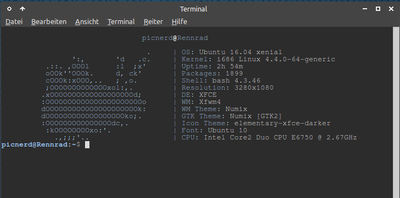

Eigene Logos ScreenFetch hinzufügen
Achtung!
Die Verwendung dieses Howto geschieht auf eigene Gefahr. Bei Problemen mit der Anleitung melde dies bitte in der dazugehörigen Diskussion und wende dich zusätzlich an den Verfasser des Howtos.
Hinweis:
Diese Howto-Anleitung wurde zuletzt von picnerd am 05.02.2017 unter Xubuntu 16.04 erfolgreich getestet.
Zum Verständnis dieses Artikels sind folgende Seiten hilfreich:

Man installiert screenfetch, welches Systeminformationen im Terminal anzeigt, aus verschiedenen Gründen:
um Screenshots hoch zu laden ohne zusätzliche Systemangaben tätigen zu müssen.
um schnell Systeminformationen zu bekommen.
weil einem die Darstellung gefällt.
?
Nach jedem Neustart oder dem öffnen eines neuen Terminalfensters müssen die Befehle wieder neu eingeben werden. Auch muss nicht unbedingt die richtige Distribution angezeigt werden. Dies war der Grund diesen Artikel zu erstellen.
Hier geht es um das Hinzufügen eines neuen ASCII-Logos und dem anpassen der Ausgabe im Terminal. Zusätzlich wird ein Weg aufgezeigt wie die Ausgabe automatisiert werden kann. Diese Anleitung ist auch auf andere Desktop-Umgebungen als Xubuntu und Logos anwendbar.
Installation¶
screenfetch
jp2a
 mit apturl
mit apturl
Paketliste zum Kopieren:
sudo apt-get install screenfetch jp2a
sudo aptitude install screenfetch jp2a
Anleitung¶
Als erstes muss das Programm screenfetch installiert werden. Als zweites ein kleines Programm namens jp2a welches Bilder im .jpg Format in ASCII umwandeln kann. An dieser Stelle muss erwähnt werden das es auch andere Programme mit ähnlichen Funktionen gibt (s. Links), falls nötig ein Bildbearbeitungsprogramm wie z.B. Gimp.
In diesem Beispiel geht es um das Xubuntu-Logo, da es in screenfetch fehlt. Es ist der kleine blaue Mauskopf auf weißen Hintergrund. Natürlich können auch andere Logos oder selbst erstellte benutzt werden. Diesem Bild sollte vorher die richtige Größe und das richtige Format mitgegeben werden in dem man mit Gimp die Auflösung auf 50x50 px ändert und es im .jpg Format exportiert. Der Speicherort ist frei wählbar. Der Dateiname darf keine Leerstellen beinhalten. Dieser Arbeitsschritt kann auch übersprungen werden aber zur besseren Ansicht und um Ungenauigkeiten beim Ergebnis beim nächsten Schritt zu vermeiden ist es evt.von Vorteil.
Jetzt wird ein Terminalfenster geöffnet und folgener Befehl eingegeben.(Der Pfad ist vollständig anzugeben und anzupassen. Der Name der Bilddatei darf keine Leerstellen beinhalten.)
jp2a --size=50x30 --background=dark --invert /home/picnerd/Dokumente/Logo.jpg --output=/home/picnerd/Dokumente/Logo1.txt
Damit ist eine Textdatei mit dem Namen Logo1 erzeugt worden. Ist man sich nicht sicher ob das Ergebnis passt, kann die Ausgabe auch auf das Terminal eingeschränkt werden in dem man einfach bei der Eingabe des Befehls auf die letzte "output=Pfad_zur_Datei" Option verzichtet. Hier sind ein paar Versuche zu machen bis das Ergebnis stimmt. Es ist dabei zu beachten das nur die Hälfte der Breite des Terminalfensters zu Verfügung steht bei der Standartausgabe von screenfetch. Wer keine Lust hat selbst zu basteln kann die Ausgabe in diesem Artikel übernehmen, die weiter unten zu finden ist. Wichtig ist auch zu Erwähnen das die Größe des Terminalfensters frei in den Einstellungen des Terminals bestimmt werden kann. In diesem Fall liegt die Breite bei 89 Spalten. Das die Option --background=dark gewählt wurde liegt daran das ein Theme benutzt wird und das Terminalfenster einen dunklen Hintergrund hat. Mit der Eingabe von
jp2a -h
können noch mehr Optionen eingesehen werden um den Befehl auf eigene Bedürfnisse anzupassen.
Als nächstes muss das Skript von ScreenFetch mit Rootrechten geöffnet werden. Das kann auf zwei Arten geschehen.
1. Wechsel in den Rootmodus im Terminal mit der Eingabe von
Sudo su
und öffnen des Dokuments mit Nano
nano /usr/bin/screenfetch
Der Rootmodus kann mit der Eingabe von
exit
beendet werden.
oder
2. Öffnen eines Texteditors (in diesem Fall Mousepad) mit der Eingabe von
gksudo mousepad
Nun navigiert man zu /usr/bin/screenfetch und öffnet das Dokument. Evtl. ist noch gksudo mit der Eingabe von
sudo apt-get install gksudo
zu installieren.
Hinweis:
Unter der Desktopumgebung Kubuntu ist kdesudo zu verwenden.
Nach dem öffnen scrollt man zur Zeile 3714. Das sollte das Ende des Eintrages "NixOS" und dem Anfang von "*" sein. Jetzt positioniert man per Copy/Paste die vorher erstellte ASCII-Art dazwischen und bearbeitet die Syntax. Eigentlich ist die Syntax pro Distributionslogo immer die gleiche bis auf die Farbwerte.
1 2 3 4 5 6 7 8 9 10 11 12 13 14 15 16 17 18 19 20 21 | "Xubuntu") if [[ "$no_color" != "1" ]]; then c1=$(getColor 'blue') fi if [ -n "${my_lcolor}" ]; then c1="${my_lcolor}"; fi startline="0" fulloutput=("${c1} %s " "$c1 . |%s" "$c1 ':, 'd .c. |%s" "$c1 .::. ,OOOl :l ;x' |%s" "$c1 oOOk''OOOk. d, ck' |%s" "$c1 cOOOk:xOOO,.. ; ,o. |%s" "$c1 ;OOOOOOOOOOOOOxol:,. |%s" "$c1 .xOOOOOOOOOOOOOOOOOOOd; |%s" "$c1 :OOOOOOOOOOOOOOOOOOOOOOo |%s" "$c1 dOOOOOOOOOOOOOOOOOOOOOk: |%s" "$c1 dOOOOOOOOOOOOOOOOOOko;. |%s" "$c1 :OOOOOOOOOOOOOOOdc,. |%s" "$c1 :kOOOOOOOOxo:'. |%s" "$c1 .,;;;'.. |%s") ;; |
Werden mehr Farben benötigt müssen entsprechen der Anzahl der Einträge c1="${my_lcolor}"; erweitert werden. c2=...; c3=... usw. Diese müssen dann auch in der ASCII-Art mit eingebaut werden. Der Farbwert wird auf der linken Seite begonnen. beginnt ab einem bestimmtes Zeichen eine andere Farbe muss entsprechen der Code vorangestellt werden mit z.B. "${c2} Das Ende des Farbwertes wird mit dem vorherigen "${c1} oder einem neuen Farbwert "${c3} abgelöst. Das muss für jede Zeile der ASCII-Art gemacht werden. Dadurch sieht es ein wenig verschwommen aus. Also Zeile für Zeile und am besten von Rechts beginnend abarbeiten. Ein Vergleich mit anderen Einträgen kann Hilfreich sein.
Jede Zeile wird mit einem |%s" beendet. Diese lassen sich aber auch noch im ganzen verschieben oder Abstände mit Leerzeichen einbauen. Auch lässt sich der Pipeoperator entfernen. Nach jedem |%s" beginnt der Text für die Systemangaben in der Ausgabe. Möchte man diese Senkrecht untereinander haben wird man um das verschieben nicht herum kommen je nach Logo. Hier ist designtechnische Raffinesse gefragt oder einfach mal ausprobieren. In diesem Beispiel wurde mit Hilfe von Leerzeichen die erste Zeile mittig gesetzt.
Während der Arbeit an dem Screenfetchscript kann immer mal wieder gespeichert werden um das Ergebnis zu sehen in dem man ein neues Terminalfenster öffnet und wieder schließt. So kann man sich an das erhoffte Ergebnis heran arbeiten und seine Arbeit immer mal wieder überprüfen.
Tipp¶
Abschließend muss die Anzeige von screenfetch noch dauerhaft festgelegt werden. Hierzu öffnet man das Homeverzeichnis und lässt sich die versteckten Dateien anzeigen und sucht nach der Datei .bashrc und öffnet diese. Bis ans Ende scrollen und den Screefetch-Befehl einfügen:
screenfetch -A 'Xubuntu'
und speichern. Ab jetzt startet jedes Terminalfenster mit dem modifizierten screenfetch.
Hinweis:
Laut der Manpage und der Terminalhilfe von Screenfetch muss das erzeugte Script alleinstehend als Shellscript abgespeichert und per Pfadangabe angehängt werden. Der hier beschriebene Weg ist ein etwas anderer um Ordnung im Dateisystem zu erhalten.
- Erstellt mit Inyoka
-
 2004 – 2017 ubuntuusers.de • Einige Rechte vorbehalten
2004 – 2017 ubuntuusers.de • Einige Rechte vorbehalten
Lizenz • Kontakt • Datenschutz • Impressum • Serverstatus -
Serverhousing gespendet von